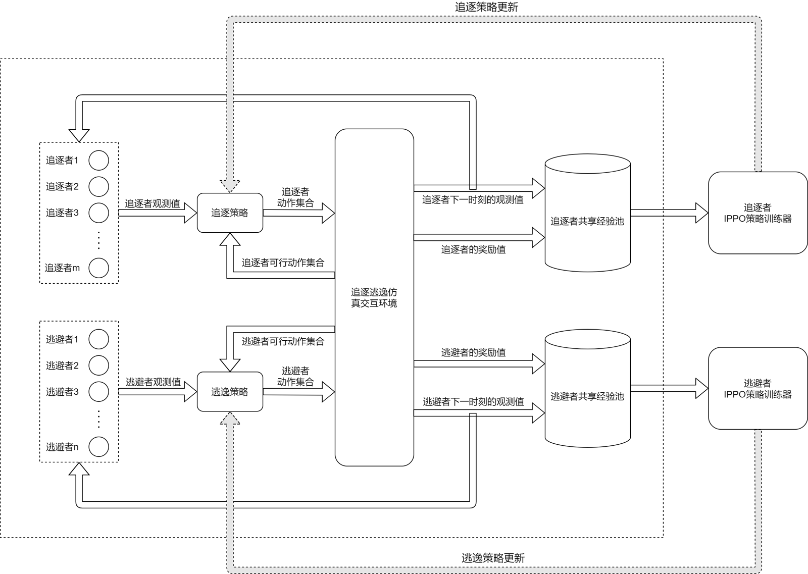
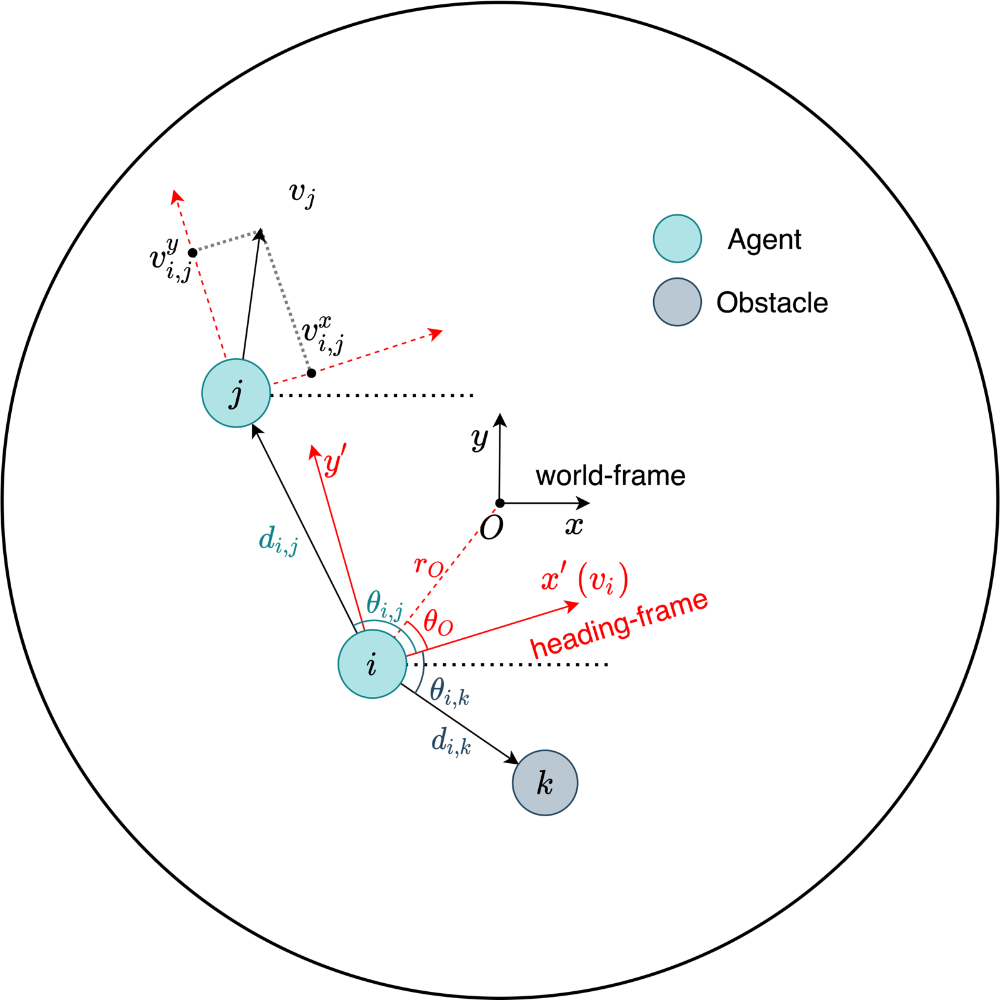
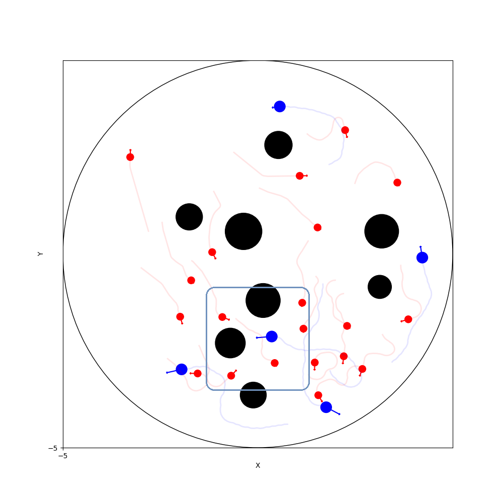
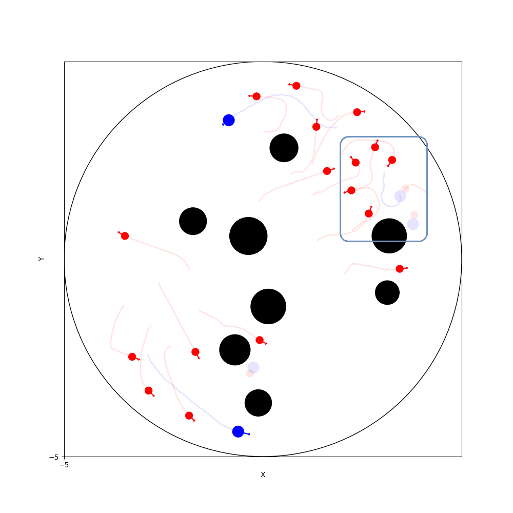
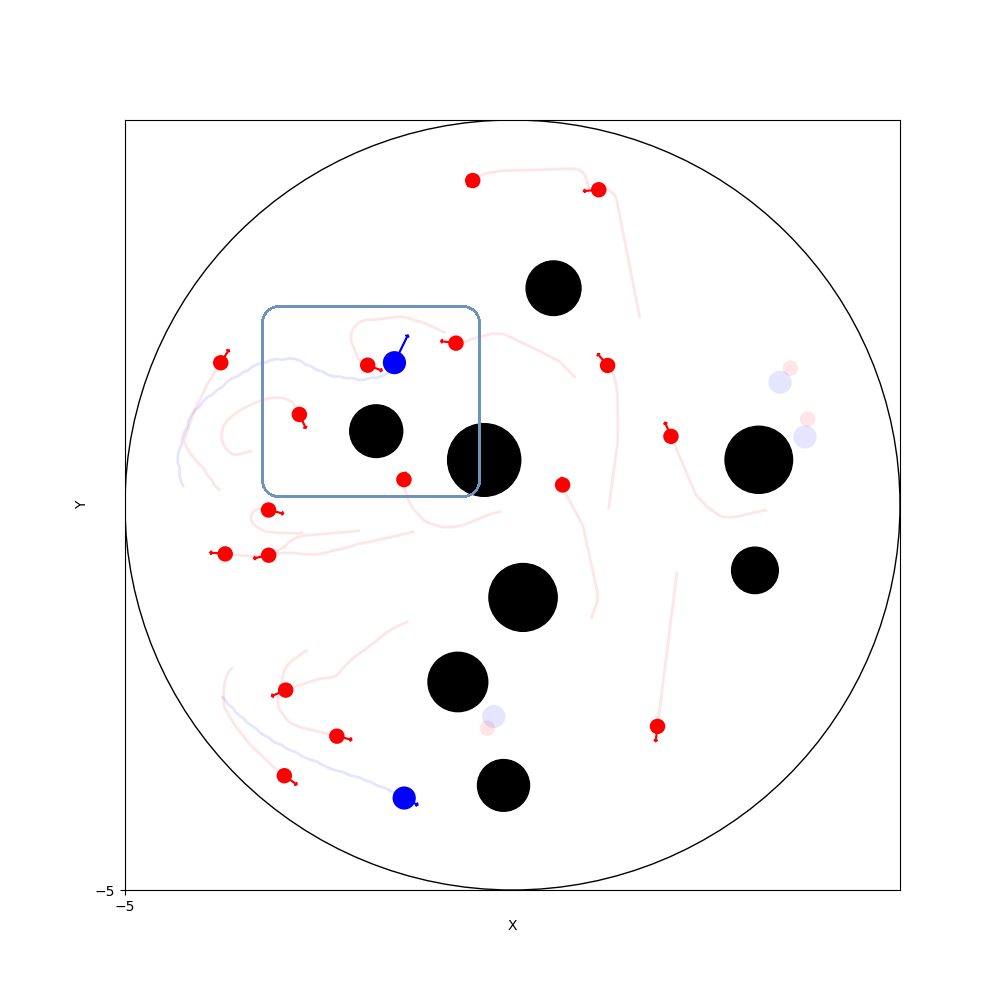
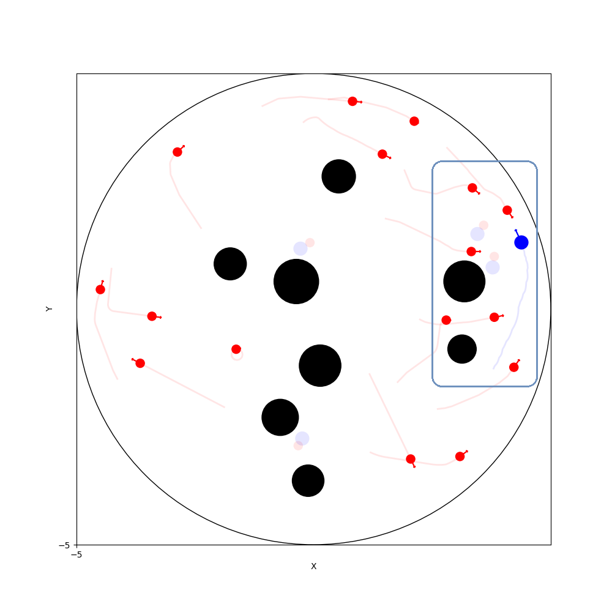

Large-Scale Multi-Agent Pursuit–Evasion with Deep Reinforcement Learning
Large Scale Pursuit-Evasion Under Collision Avoidance Using Deep Reinforcement Learning
A mixed cooperative–competitive setting with multiple pursuers and evaders. Robots cooperate within each team and compete across teams. Each robot selects its actions independently under collision-avoidance and kinematic constraints, while both teams' policies co-evolve during training.
Combines IPPO, within-team parameter sharing, and Mix-Attention to handle varying numbers of robots and obstacles. A six-robot physical experiment evaluates transfer from simulation.
Demonstration
A physical pursuit–evasion experiment with four pursuers and two targets.
Method and Contributions
- Cooperation and competition: pursuers coordinate capture while evaders learn to escape; both teams train and co-evolve together.
- IPPO and parameter sharing: robots on the same team share policy parameters and make decentralized decisions from local observations.
- Mix-Attention: separately projects and fuses information about the robot, teammates, opponents, and obstacles to accommodate varying entity counts.
- Collision avoidance and motion constraints: incorporates obstacle avoidance and robot kinematics, with evaluation in simulation and on physical robots.
Training and Observation Normalization


Simulation and Behavior Analysis
Simulation illustrates emergent cooperation, target switching, and the use of obstacles.
Behavior Examples




Publication and Related Results
Large Scale Pursuit-Evasion Under Collision Avoidance Using Deep Reinforcement Learning
DOI / publication record ↗Open paper from the lab ↗
Related patent application: Distributed Decision-Making for Multi-Robot Pursuit of Multiple Targets Using Reinforcement Learning. Application no. 202210974382.2. Inventors: Yong Liu, Helei Yang, and Junjie Cao.